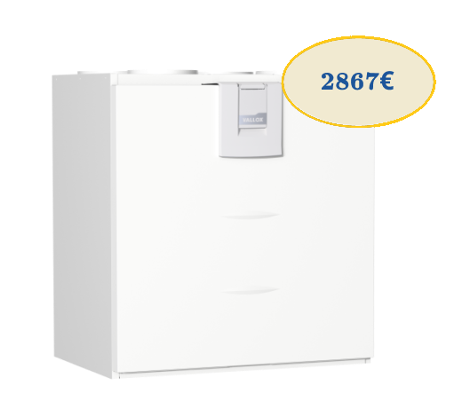

Vallox 110 MV
для квартир среднего размера и небольших домов.
Vallox 110 MV – выбор для тех, кто ценит качество и чистый воздух в помещении. Подходит для квартир среднего размера, заботится об энергоэффективной и незаметной вентиляции дома. В машину встроены датчики углекислого газа и влажности, которые можно использовать для автоматизации работы вентиляции. Датчики летучих органических соединений и дополнительные датчики влажности также доступны в качестве аксессуаров. Годовой КПД машины составляет 79%. Вентиляционная установка Vallox 110 MV может быть подключена к бесплатному облачному сервису MyVallox Cloud, через который можно управлять установкой с подключением к Интернету из любого места. Компьютер, зарегистрированный в облачной службе, обновляется автоматически.